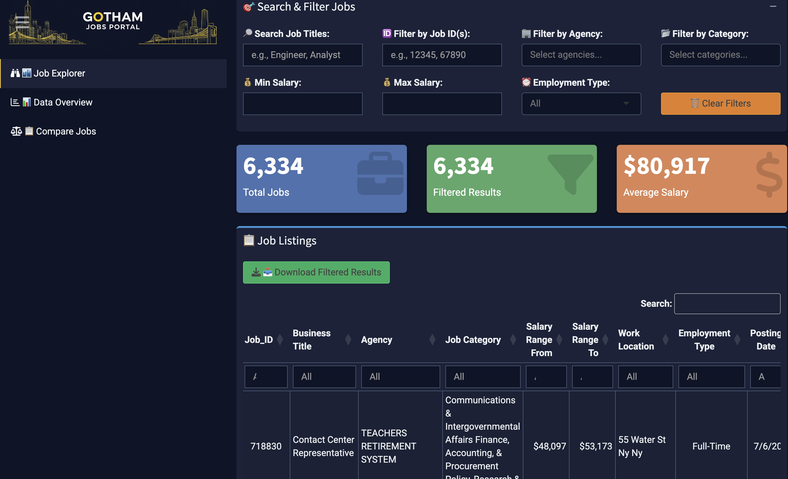
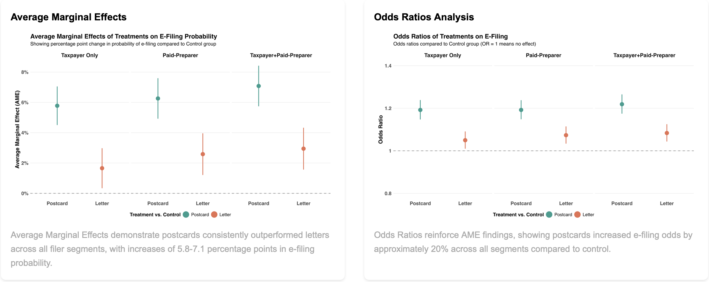
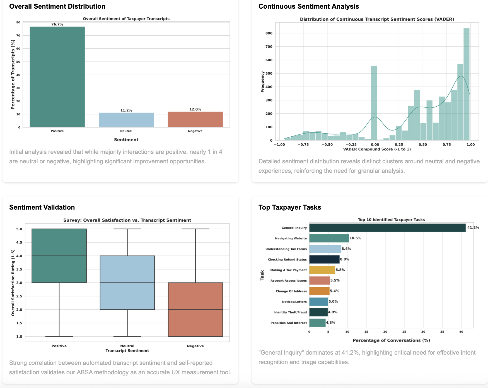

Featured Projects
A sample of my client work and personal projects

NYC Career Hub
Displays and filters currently open positions from NYC Open Data with real-time updates.
View Project

Driving E-Filing Adoption
Large-scale behavioral intervention study to increase payroll tax e-filing adoption using RCT methods.
View Project

IRS Chatbot Sentiment Analysis
Aspect-based sentiment analysis of customer interactions with IRS virtual assistant.
View Project
Tax Compliance Experiments
Experimental research on factors influencing tax compliance decisions.
View ProjectInequality, Transparency, and the Public Good
Research on the effects of transparency on inequality and contributions to the public good.
View Project